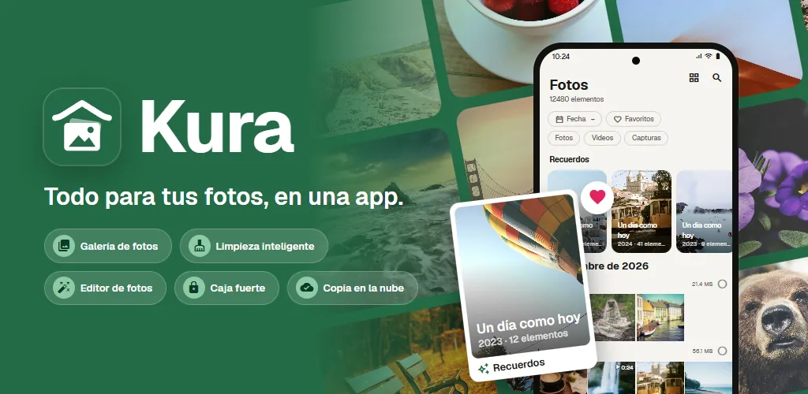
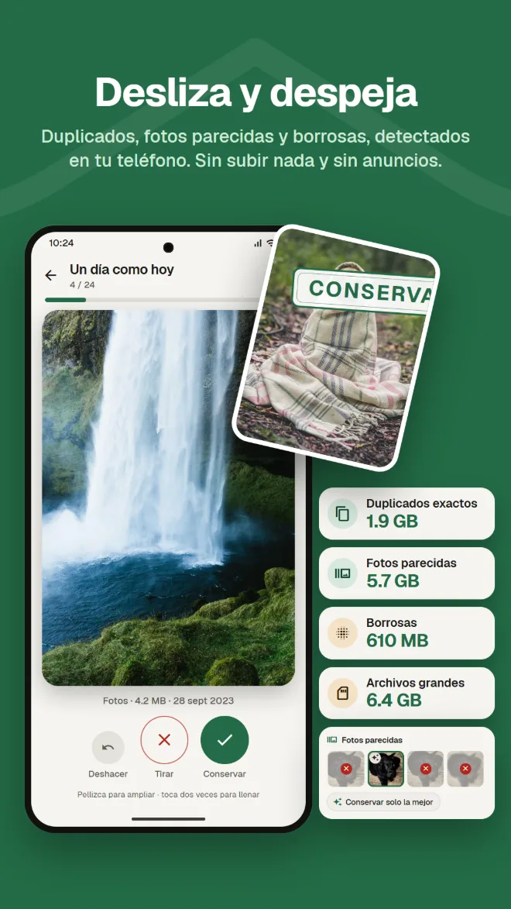
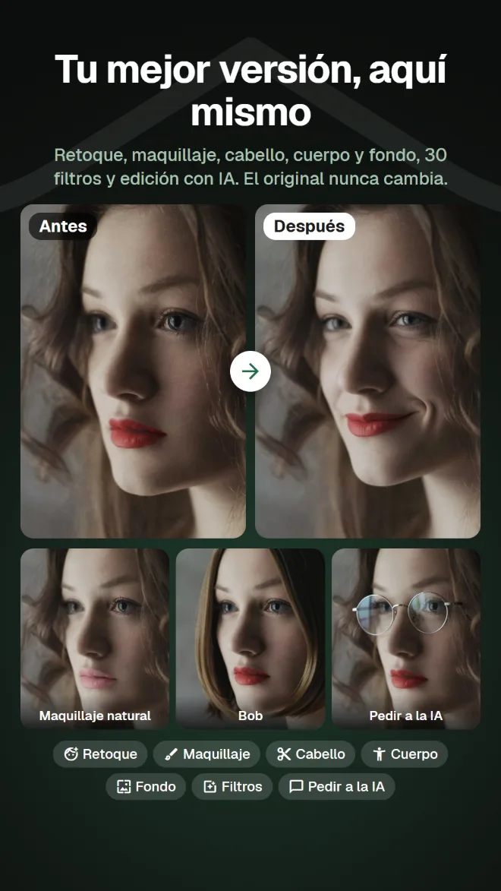
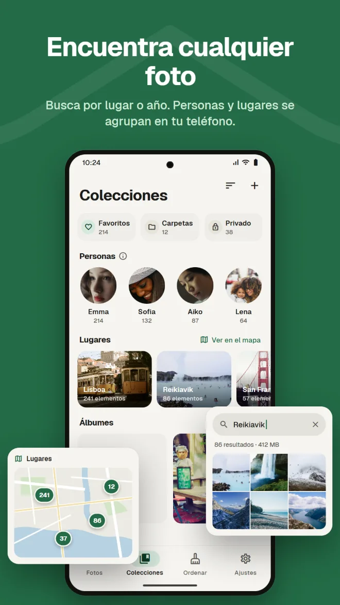
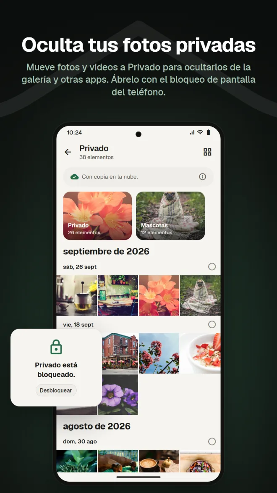
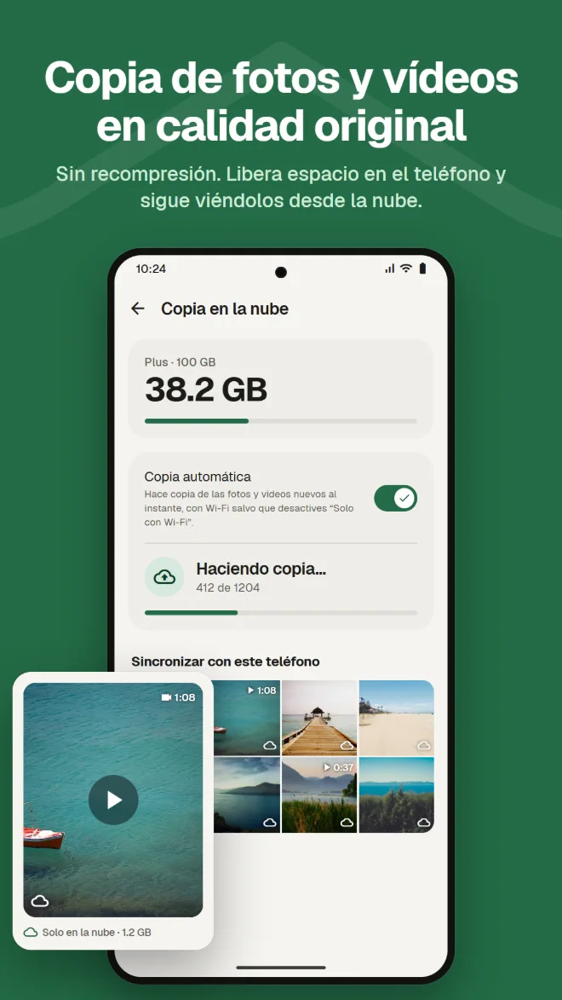
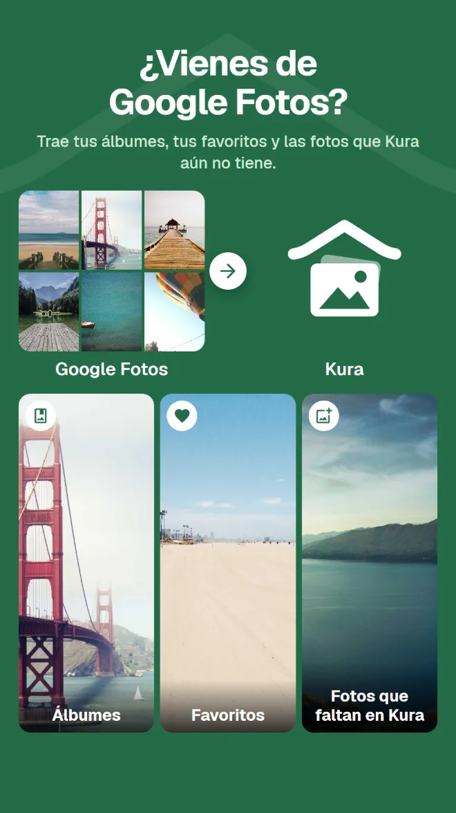

Busca lo que hay dentro
Encuentra fotos por lugar, por lo que aparece en ellas o por el texto de la imagen.
Galería, limpieza, edición con IA, espacio privado, copia de seguridad y paso desde Google Fotos. Con Kura, no necesitas una app distinta para cada cosa.
Android 11 o posterior · Ver, ordenar y borrar es gratis · Inicia sesión con Google

Una galería para verlas, una app de limpieza para liberar espacio, otra app para editar, otro servicio para la copia. Cada cambio te obliga a buscar la misma foto otra vez.
Kura lo hace todo en una sola biblioteca.
Ve, limpia, edita y haz copia de las mismas fotos, en el mismo lugar.
De la biblioteca a la limpieza, la edición, el paso desde Google Fotos y la copia.
Kura encuentra duplicados exactos, fotos parecidas, fotos borrosas y archivos grandes en tu teléfono. Desliza a la derecha para conservar y a la izquierda para tirar, y mira al instante cuánto espacio puedes liberar.

Retoque, forma, maquillaje, cabello y fondo, más 30 filtros, ajustes y recorte. Hay filtros que hacen apetecible la comida y ajustes de cuerpo para toda tu figura. Siempre guardas una copia, así el original no cambia.

Una cuadrícula por fecha, con recuerdos del mismo día en años anteriores. Busca por lugar, por lo que aparece en la foto o por el texto que contiene, y las caras se agrupan por persona en tu teléfono.

Mueve fotos y videos a Privado para ocultarlos de la galería y otras apps. Ábrelo con el bloqueo de pantalla del teléfono.

Copia fotos y videos sin recomprimir. Quita del teléfono las copias ya respaldadas para liberar espacio; siguen visibles desde la nube.

Solo envía tu .zip de Google Takeout desde la app o la app web. Kura trae tus álbumes, tus favoritos y las fotos que aún no tiene. El servidor de Kura lo descomprime en segundo plano, así que puedes cerrar la app y el navegador.

Las fotos de tu nube de Kura se pueden ver, organizar, limpiar, editar, compartir y subir en la app web, igual que en la app. Los favoritos se sincronizan con la app.
Abrir la app webInicia sesión con Google · Solo en inglés y japonés
Todo lo que esperas de la galería que usas a diario.
Encuentra fotos por lugar, por lo que aparece en ellas o por el texto de la imagen.
Caras agrupadas por persona en tu teléfono, y tus fotos en un mapa.
Fotos del mismo día en años anteriores, arriba de tu biblioteca.
Ajustes de brillo y color, recorte y pincel, más filtros para comida.
Añade fecha de caducidad y contraseña, y envíalo a quien no tenga la app.
Confirma con el bloqueo de pantalla cada vez que la abras. También puedes ocultar Privado.
Instálala y tus fotos aparecen, ya ordenadas.
Descárgala en Google Play (Android 11 o posterior)
Elige «Permitir todo» para cargar toda tu biblioteca
Inicia sesión con tu cuenta de Google
Ordena enseguida; añade la copia cuando la necesites
Sin anuncios. Solo pagas cuando usas la nube.
Todo lo que pasa en tu teléfono
Pago mensual a través de Google Play. Cancela cuando quieras
Google Play muestra los precios en tu moneda local.
Las fotos solo salen de tu teléfono cuando haces algo que claramente las envía a algún sitio.
La detección de duplicados, desenfoque, caras, objetos y texto se hace en tu teléfono. No se sube ninguna foto para ordenarla.
Android te pregunta antes de borrar cualquier archivo, y lo que tiras espera en la papelera hasta que la vacíes.
Al iniciar sesión, nuestro servidor guarda solo el ID de tu cuenta de Google. Tu nombre y tu correo electrónico nunca se envían.
La edición con IA solo envía la zona alrededor de la cara, y ni la foto ni el resultado se guardan en el servidor.
Sin anuncios · Ver, ordenar y borrar es gratis